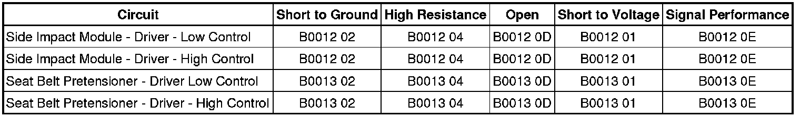

B0012
DTC B0012 or B0013
Diagnostic Instructions
* Perform the Diagnostic System Check - Vehicle (Initial Inspection and Diagnostic Overview) prior to using this diagnostic procedure.
* Review Strategy Based Diagnosis (Initial Inspection and Diagnostic Overview) for an overview of the diagnostic approach.
* Diagnostic Procedure Instructions (Initial Inspection and Diagnostic Overview)provides an overview of each diagnostic category.
DTC Descriptors
DTC B0012 01
- Driver Frontal Deployment Loop Stage 1 Short to Battery
DTC B0012 02
- Driver Frontal Deployment Loop Stage 1 Short to Ground
DTC B0012 04
- Driver Frontal Deployment Loop Stage 1 Open Circuit
DTC B0012 0D
- Driver Frontal Deployment Loop Stage 1 Resistance Above Threshold
DTC B0012 0E
- Driver Frontal Deployment Loop Stage 1 Resistance Below Threshold
DTC B0013 01
- Driver Frontal Deployment Loop Stage 2 Short to Battery
DTC B0013 02
- Driver Frontal Deployment Loop Stage 2 Short to Ground
DTC B0013 04
- Driver Frontal Deployment Loop Stage 2 Open Circuit
DTC B0013 0D
- Driver Frontal Deployment Loop Stage 2 Resistance Above Threshold
DTC B0013 0E
- Driver Frontal Deployment Loop Stage 2 Resistance Below Threshold
Diagnostic Fault Information

Circuit/System Description
During a frontal crash of sufficient force the inflatable restraint sensing and diagnostic module (SDM) will allow current to flow through the deployment loop in order to deploy the steering wheel module. The SDM performs continuous diagnostic tests on the deployment loops to check for proper circuit continuity and for shorts to ground or voltage. There are 2 shorting bars used within the steering wheel module coil connector which will short together both steering wheel module stage 1 high circuit and steering wheel module stage 1 low circuit and both steering wheel module stage 2 high circuit and steering wheel module stage 2 low circuit when the connector is disconnected. This will help to prevent unwanted deployment of the inflator module during servicing.
Conditions for Running the DTC
Ignition voltage is between 9-16 volts.
Conditions for Setting the DTC
B0012 01 Stage 1 or B0013 01 Stage 2
The steering wheel module high and/or low circuit is short to voltage for 120 milliseconds.
B0012 02 Stage 1 or B0013 02 Stage 2
The steering wheel module high and/or low circuit is short to ground for 120 milliseconds.
B0012 04 Stage 1 or B0013 04 Stage 2
The steering wheel module high and/or low circuit is open for 120 milliseconds.
B0012 0D Stage 1 or B0013 0D Stage 2
The steering wheel module deployment loop resistance is more than 5.1 ohms for 120 milliseconds.
B0012 0E Stage 1 or B0013 0E Stage 2
The steering wheel module deployment loop resistance is less than 1.3 ohms for 120 milliseconds.
Action Taken When the DTC Sets
* The SDM commands the AIR BAG indicator ON via serial data communications.
* The SDM will store a DTC, if event occurs system will still attempt deployments.
Conditions for Clearing the DTC
* The condition responsible for setting the DTC no longer exists.
* A history DTC will clear once 100 malfunction-free ignition cycles have occurred.
Diagnostic Aids
Each airbag module requires a specific adapter to connect the load tool to the SIR system. For specific tool information refer to Special Tools (Tools and Equipment) .
Reference Information
Schematic Reference
SIR Schematics ([1][2]Air Bag Systems)
Connector End View Reference
Component Connector End Views (Connector Views)
Description and Operation
SIR System Description and Operation (Description and Operation)
Electrical Information Reference
* Circuit Testing (Component Tests and General Diagnostics)
* Connector Repairs (Component Tests and General Diagnostics)
* Testing for Intermittent Conditions and Poor Connections (Component Tests and General Diagnostics)
* Wiring Repairs (Component Tests and General Diagnostics)
* SIR/SRS Wiring Repairs (Component Tests and General Diagnostics)
Scan Tool Reference
Control Module References (Programming and Relearning)for scan tool information.
Circuit/System Testing
Important: When removing connectors, inspect for damage or corrosion. Damage or corrosion in the following requires repair or replacement of the affected component/connector:
* The steering wheel coil module
* The SDM module
* The steering wheel coil module wiring harness connector
* The SDM wiring harness connector
1. Ignition OFF, disconnect the steering wheel module. Refer to Inflatable Restraint Steering Wheel Module Replacement (Service and Repair) .
2. With the applicable adaptor, connect J 38715-A .
3. Ignition ON, with a scan tool, verify DTC is set as current.
• If DTC is not set or is set as history, replace the steering wheel module.
4. Ignition OFF, disconnect J 38715-A .
5. Disconnect the steering wheel module coil in-line connector. Refer to Inflatable Restraint Steering Wheel Module Coil Centering (Procedures) .
6. With the applicable adaptor, connect J 38715-A .
7. Ignition ON, with a scan tool, verify DTC is set as current.
• If DTC is not set or is set as history, replace the steering wheel module coil.
8. Ignition OFF, disconnect J 38715-A and the applicable adaptor
9. Ignition ON, test for less than 1-volt between the applicable HI circuit and ground.
• If not the specified range, test the circuit for a short to voltage.
10. Test for less than 1-volt between the applicable LOW circuit and ground.
• If not the specified range, test the circuit for a short to voltage.
11. Ignition OFF, test for infinite resistance between the applicable HI circuit and ground.
• If not the specified range, test the circuit for a short to ground.
12. Test for infinite resistance between the applicable LOW circuit and ground.
• If not the specified range, test the circuit for a short to ground.
13. Disconnect the harness connector at the SDM.
14. Test for less then 1 ohm of resistance between the SDM connector and the airbag module connector HI circuit.
• If not the specified range, test the circuit for an open/high resistance.
15. Test for less then 1 ohm of resistance between the SDM connector and the airbag module connector LOW circuit.
• If not the specified range, test the circuit for an open/high resistance.
16. If all circuits test normal, replace the SDM.
Repair Instructions
Perform the Diagnostic Repair Verification (Verification Tests) after completing the diagnostic procedure.
* Inflatable Restraint Steering Wheel Module Replacement (Service and Repair)
* Inflatable Restraint Steering Wheel Module Coil Centering (Procedures)
* Control Module References (Programming and Relearning)for SDM replacement, setup, and programming